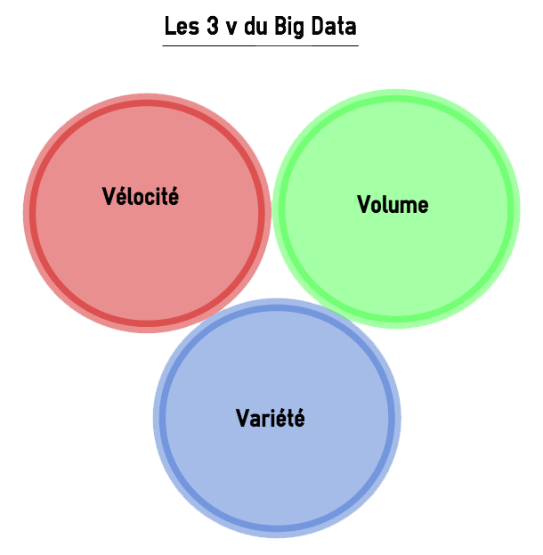
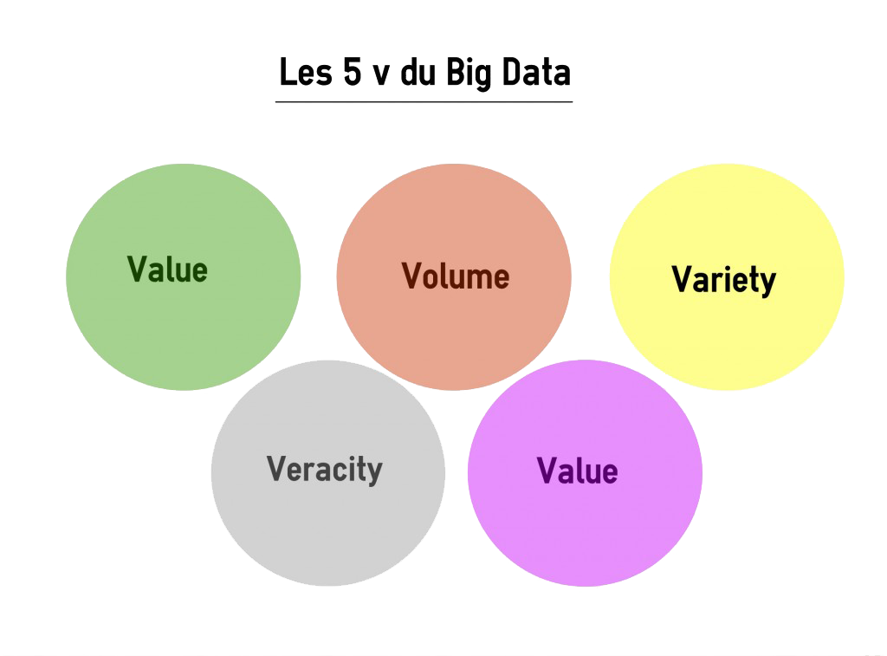

Publié le 01 Mai 2020
L’explosion quantitative des données numériques a obligé les chercheurs à trouver de nouvelles manières de voir et d’analyser le monde. Il s’agit de découvrir de nouveaux ordres de grandeur concernant la capture, la recherche, le partage, le stockage, l’analyse et la présentation des données. Ainsi est né le « Big Data ». Il s’agit d’un concept permettant de stocker un nombre indicible d’informations sur une base numérique. Selon les archives de la bibliothèque numérique de l’Association for Computing Machinery (ou ACM) dans des articles scientifiques concernant les défis technologiques à relever pour visualiser les « grands ensembles de données », cette appellation est apparue en octobre 1997.
Littéralement, ces termes signifient mégadonnées, grosses données ou encore données massives. Ils désignent un ensemble très volumineux de données qu’aucun outil classique de gestion de base de données ou de gestion de l’information ne peut vraiment travailler. En effet, nous procréons environ 2,5 trillions d’octets de données tous les jours. Ce sont les informations provenant de partout : messages que nous nous envoyons, vidéos que nous publions, informations climatiques, signaux GPS, enregistrements transactionnels d’achats en ligne et bien d’autres encore. Ces données sont baptisées Big Data ou volumes massifs de données.
Inventé par les géants du web, le Big Data se présente comme une solution dessinée pour permettre à tout le monde d’accéder en temps réel à des bases de données géantes. Il vise à proposer un choix aux solutions classiques de bases de données et d’analyse (plate-forme de Business Intelligence en serveur SQL…). Selon le Gartner, ce concept regroupe une famille d’outils qui répondent à une triple problématique dite règle des 3V. Il s’agit notamment d’un Volume de données considérable à traiter, une grande Variété d’informations (venant de diverses sources, non-structurées, organisées, Open…), et un certain niveau de Vélocité à atteindre, autrement dit de fréquence de création, collecte et partage de ces données.
Etant un objet complexe polymorphe, sa définition varie selon les communautés qui s’y intéressent en tant qu’usager ou fournisseur de services. Une approche transdisciplinaire permet d’appréhender le comportement des différents acteurs : les concepteurs et fournisseurs d’outils (les informaticiens), les catégories d’utilisateurs (gestionnaires, responsables d’entreprises, décideurs politiques, chercheurs), les acteurs de la santé et les usagers.
Parmi les utilisateurs les plus enthousiastes du Big Data, on retrouve les gestionnaires et les économistes. Ces derniers définissent ce phénomène par la règle des 5V (Volume, Velocity, Variety, Veracity, Value).
Le volume correspond à la masse d’informations produite chaque seconde. Selon des études, pour avoir une idée de l’accroissement exponentiel de la masse de données, on considère que 90 % des données ont été engendrées durant les années où l’usage d’internet et des réseaux sociaux a connu une forte croissance. L’ensemble de toutes les données produites depuis le début des temps jusqu’à la fin de l’année 2008, conviendrait maintenant à la masse de celles qui sont générées chaque minute. Dans le monde des affaires, le volume de données collecté chaque jour est d’une importance vitale.
2. La velocitéLa velocité équivaut à la rapidité de l’élaboration et du déploiement des nouvelles données. Par exemple, si on diffuse des messages sur les réseaux sociaux, ils peuvent devenir « viraux » et se répandre en un rien de temps. Il s’agit d’analyser les données au décours de leur lignée (appelé parfois analyse en mémoire) sans qu’il soit indispensable que ces informations soient entreposées dans une base de données.
3. La variétéSeulement 20% des données sont structurées puis stockées dans des tables de bases de données relationnelles similaire à celles utilisées en gestion comptabilisée. Les 80% qui restent sont non-structurées. Cela peut être des images, des vidéos, des textes, des voix, et bien d’autres encore… La technologie Big Data, permet de faire l’analyse, la comparaison, la reconnaissance, le classement des données de différents types comme des conversations ou messages sur les réseaux sociaux, des photos sur différents sites etc. Ce sont les différents éléments qui constituent la variété offerte par le Big Data.
4. La véracitéLa véracité concerne la fiabilité et la crédibilité des informations collectées. Comme le Big Data permet de collecter un nombre indéfini et plusieurs formes de données, il est difficile de justifier l’authenticité des contenus, si l’on considère les post Twitter avec les abréviations, le langage familier, les hashTag, les coquilles etc. Toutefois, les génies de l’informatique sont en train de développer de nouvelles techniques qui devront permettre de faciliter la gestion de ce type de données notamment par le W3C.
5. La valeurLa notion de valeur correspond au profit qu’on puisse tirer de l’usage du Big Data. Ce sont généralement les entreprises qui commencent à obtenir des avantages incroyables de leurs Big Data. Selon les gestionnaires et les économistes, les entreprises qui ne s’intéressent pas sérieusement au Big Data risquent d’être pénalisées et écartées. Puisque l’outil existe, ne pas s’en servir conduirait à perdre un privilège concurrentiel.
Etant une tendance lourde, le Big Data n’est pas une mode. Dans le domaine de l’usage, il satisfait une nécessité de travailler la donnée plus profondément, pour créer de la valeur, conjointement à des aptitudes technologiques qui n’existaient pas dans le passé. Cependant, compte tenu de l’évolution des technologies qui ne semble pas vouloir s’estomper, on ne peut pas alors parler d’une norme véritable ou de standards dans le domaine du Big data.
Beaucoup d’applications du Big Data n’en sont qu’à leurs préludes et on peut s’attendre à voir apparaître des utilisations auxquelles on ne s’attend pas encore aujourd’hui. En quelque sorte, le Big Data est un tournant pour les organisations au moins aussi important qu’internet en son temps. Chaque entreprise doit donc s’y mettre dès maintenant. Dans le cas contraire, il y a un risque qu’elle se rendent comptent d’ici quelques années qu’elles se sont faites dépasser par la concurrence. Les gouvernements et les organismes publics se penchent également sur la question à travers l’ open data.
La Commission européenne annonce le lancement d’un hub Big Data dédié au Covid-19. L’objectif est de permettre aux chercheurs européens de partager leurs données et leurs découvertes sur le coronavirus SARS-CoV-2 et sa maladie. Afin de lutter efficacement contre le Covid-19, il est important que les chercheurs disposent d’outils performants. C’est la raison pour laquelle les géants du Cloud leur offrent leurs services pendant la crise. Toutefois, il faut aussi que les chercheurs puissent collaborer en partageant leurs découvertes et l’avancée de leurs travaux. Pour les y aider, la Commission européenne annonce le lancement d’un hub Big Data dédié aux données sur le Covid-19 . Sur ce hub, les chercheurs pourront stocker et partager des données sur les séquences ADN et les structures de protéines du virus SARS-CoV-2 ou sur leurs recherches pré-cliniques. La plateforme ouverte aura pour but d’établir des passerelles entre les infrastructures de données de santé publiques nationales, la Commission européenne, l’European Molecular Biology Lab (EMBL), l’European Bioinformatics Institute (EMBL-EBI), les États membres de l’UE et des partenaires de recherche comme ELIXIR.
Conçu par Michel